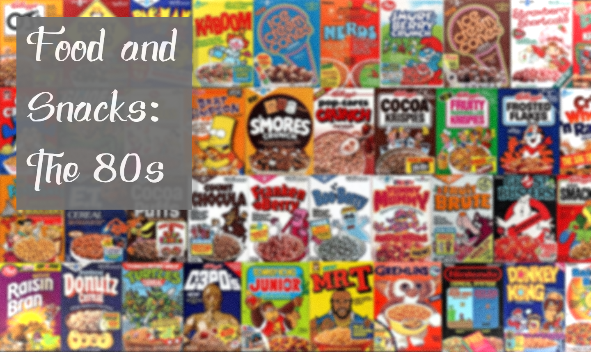

- Jawbreakers
Can you handle these choke-inducing hard candy balls?
- The California Raisins
Anyone can imagine what happens when singing groups and music bands are edible? Wish One Direction were too, right?
- Cool Ranch Doritos
Once upon a time, there was an original turquoise-flecked triangular chip. With actual fat…rings a bell?
- Tri-Color Pasta Salad
Because one-color pasta are too mainstream.
- Orange Julius
Pretty much just orange juice…but…it’s the Julius kind.
- Equal
Will probably kill you with evil toxins very slowly. One little blue package. Especially in baby blue. Baby blue would never hurt us…wow seems like the ones you give your trust to hurt you the most huh?
- Artificially Flavored Fruit Snacks
Did you have one of the cool moms who bought you Fruit by the Foot, Gushers, or Fruit Roll-Ups? Mine didn't (she opted for real fruit) and is still paying the therapist bills. Because yay.
- Tab Cola
Just Diet Coke hiding in a fuchsia can?
- Lean Cuisine
Scientists realized they could create "healthy" chicken teriyaki meals from sodium phosphates, modified cornstarch, high-fructose corn syrup, and caramel color. Reminds a bit of today?
- Capri Sun
Straw-stabbing styles got very personal with Capri Sun. Just don't stab straight through to the other side.